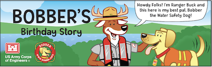

Wear your life jacket
Wear a properly fitted, U.S. Coast Guard-approved life jacket when you’re in, on, or around open water.
Tulsa District · U.S. Army Corps of Engineers
Say hello to Bobber, the Water Safety Dog. He’s here to help kids and families make every trip to the water a safer one.
Bobber helps young people learn how to enjoy lakes, rivers, pools, and beaches more safely. His advice is easy to remember, and even easier to share with your family.
Find something fun to print
Meet your lake-day buddyBobber’s got your back.A few good habits go a long way. Talk through these reminders before your next day near the water.
Wear a properly fitted, U.S. Coast Guard-approved life jacket when you’re in, on, or around open water.
Choose a designated swimming area, follow posted rules, and make sure a responsible adult is watching.
If someone is in trouble, get an adult and call 911. Reach with something long or throw something that floats—don’t enter the water.
Cold water can be dangerous even on a warm day. Dress for the water, stay alert, and don’t take chances.
These reminders support—not replace—local rules, adult supervision, and guidance from water safety professionals.
Short cartoons with big water safety lessons. Pick an episode and choose a language.
Videos open on YouTube. Content provided by the U.S. Army Corps of Engineers National Water Safety Program.
Color, play, and learn together. Every resource below is ready to open or print.
Try another search or choose a different category.
These printable materials are shared by the USACE National Water Safety Program. Select a card to open its PDF.